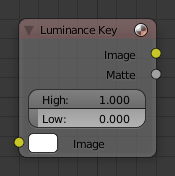

亮度抠像节点¶

亮度抠像节点。
亮度抠像 节点判定了前景对象到背景对象的亮度差异程度信息。
对于一些爆炸，烟雾或碎片等合成素材通常都是用实体暗色背景来采集，而不用绿屏做背景。这个节点可以将前景特效从背景中分离出来。对于用色度抠像不太适合的过渡曝光或灰色天空也可以用此节点来处理分离素材元素。
Tip
当对在暗背景下发射光效的合成素材，比如火焰，运用 Mix Node 节点中的 Screen 或 Add 图层模式进行操作会取得比较好的结果。
输入¶
- 图像
- 标准化图像输入。
属性¶
- 限定
- 高
- 当小于此值将认为是背景颜色部分。（此节点支持 -- 相对 --亮度：从此值到1.0）。
- 低
- 当此值较大时将认为是背景对象。（此节点支持 -- 相对 -- 暗部：从0.0到此值）。
Note
前景物体和背景物体的亮度级数在两个数值间呈现透明渐变变化。
输出¶
- 图像
- 由遮罩选择部分处理的带alpha通道的图像。
- 遮片
- 通过操作形成黑白alpha遮罩结果。
范例¶
此例中场景模特任务带有 白色 背景。使用亮度抠像节点，获取到背景的白色颜色部分，模特人物被遮住变为透明色；将此结果进行反向提取就是我们要得到的人物部分。若使用遮片提取，我们需要转换黑白色。要怎样去做呢？将颜色渐变节点左边颜色设置为白色，alpha值为1.0，右边颜色设置为黑色，alpha值为0.0。因此，当颜色渐变节点获取到黑色时，显示为白色，反之亦然。显示为反转的遮罩；白色的边框线对于alpha遮罩来说是合理的。

带有扭曲的亮度抠像。
如要混合节点效果，需要 Alpha上叠 节点；我们可以将遮罩作为因数输入。在kinda weird的例子中，我们可以直接使用遮片；我们只需要切换输入节点。你看，在角色人物图像中，我们要去掉的遮片是白色(1.0)，在人物图像中也是我们不想使用的部分，我们将背景图连接到底部的连接端口（撤销使用混合节点上部的连接端口，因数是0.0，底部端口因数为1.0）。将原始片连接到顶部端口意味着它将在亮度节点形成黑色时才被使用。Voilà，我们的人物角色将由亚特兰大被时空传送到迈阿密码头游轮的甲板上。